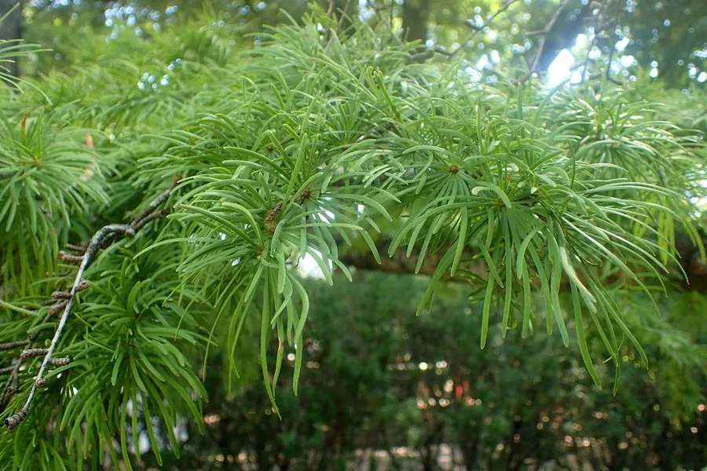

蕨类与裸子植物 · 植物界
金钱松 Pseudolarix amabilis

金钱松是我国特有的落叶松类，短枝上叶片轮状平展如金钱，入秋转为金黄，是世界著名的观赏树种。
- 分类
- 门裸子植物门纲松纲目松柏目科松科属金钱松属
- 栖息环境
- 海拔 1500 m 以下的低山丘陵，喜温暖湿润、光照充足与酸性土壤
- 地理分布
- 中国浙江、江苏、安徽、江西、福建等地，各地园林引种栽培
- 保护级别
- IUCN 暂无评估；中国国家二级重点保护野生植物
物种志
金钱松是松科落叶乔木，高可达 40 m，树干通直，树皮灰褐色、深裂。叶片条形，柔软，在长枝上螺旋状散生，在短枝上则簇生并平展成圆盘状，形似一枚枚铜钱，因此得名。雌雄同株，雄球花黄色、簇生，雌球花单生。球果卵形，成熟时淡红褐色，种鳞木质，种子具翅。入秋后叶色由绿转金黄，观赏性极强。
金钱松是中国特有的孑遗植物，主要分布于长江中下游以南的浙江、江苏、安徽、江西、福建等地的低山丘陵，多生于温暖湿润、排水良好的山地。它喜光、喜酸性土壤，生长较快，是优良的用材与园林树种，与南洋杉、雪松、金松、巨杉并称世界五大庭园树木。木材可供建筑与器具。由于野生种群数量有限、分布狭窄，金钱松被列为中国国家二级重点保护野生植物。
形态与习性
- 树高可达 40 m
- 叶条形，短枝上平展成圆盘
- 球果卵形，种鳞木质
- 物候入秋后叶色转为金黄
- 用途用材与庭园观赏
- 保护国家二级重点保护野生植物
趣味知识
- 金钱松的短枝上叶片平展成圆盘，看起来像一枚枚铜钱。
- 它入秋后叶色金黄，是世界著名的五大庭园树木之一。
- 金钱松是中国特有的孑遗树种，野生种群分布狭窄。